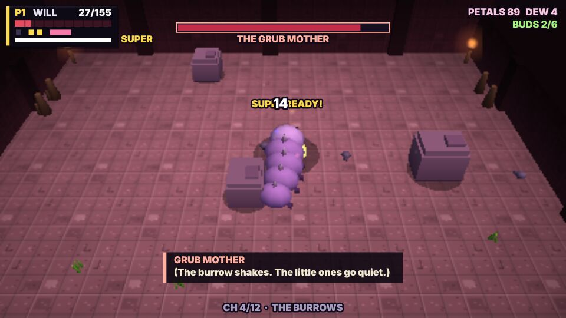
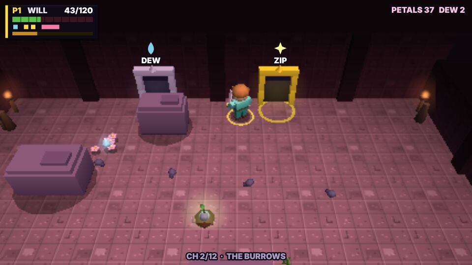
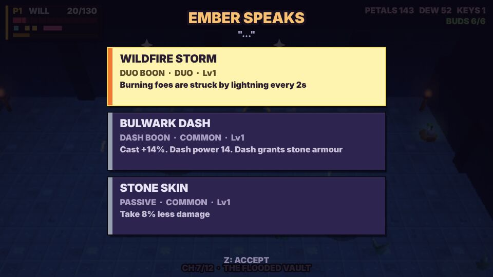
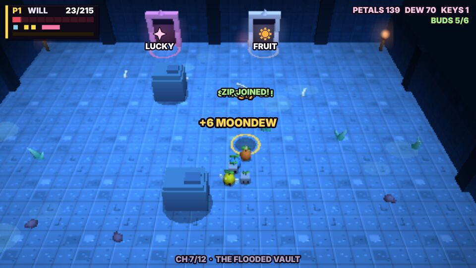

Feature review
Dig deep, die often
ROOTDEEP 64 wears its Hades influence on its sleeve, and mostly earns it. But you'll have to squint.
By Rico
I booted ROOTDEEP 64 knowing nothing. Fifty minutes, seven runs, one couch co-op wipe and two Drowned King deaths later, I can tell you this: it's the most "one more run" thing I've played in a while. It's also the most "wait, where am I?" thing I've played in a while.

THE SETUP. You're Will (Erin and Louie the dog unlock later), a keeper of the Great Lantern, digging down through The Burrows and The Flooded Vault to feed whatever's hungry underneath. Every chamber ends with two doors, and each door shows its reward up front: a boon from one of the sprout spirits (Ember, Zip, Peb, Dew), a Fountain heal, a shop, Honey, Petals. Boons stack and combine. My Firebloom cast plus a Storm Edge attack offered me a "Wildfire Storm" duo boon by chamber 8. Elites guard chambers 3 and 7 and bosses guard 4 and 8. Die and you're back at the Hearth, spending Moondew at the Mirror and keys at the Armory.

THE FIGHTING. The Petal Blade's three-hit combo is snappy, with chunky damage numbers and a "SELFIE!" finisher that made me laugh. B casts (charges recharge slowly, shown as tiny squares under your HP), RB dashes, Y fires a super when the bar's full. Will's super is literally a red bicycle tearing across the screen ("BIKE LANE!") for 90-117 damage, and it never stopped being funny. The Root Maul hits like a truck (32 a swing, big knockback) but roots you in place, and armadillos make you pay for that. The Thornbow is a mistake: tiny green slivers for 8 damage while enemies stroll right through the stream. I went from 120 to 1 HP in the first room with it.

The game's real secret is the dash strike: dash, then attack out of it. It's the only good answer to the sprout-spitters, which backpedal at your walk speed and made me whiff combo after combo. The game does tell you, but only in the pause menu. The room-1 hint line (which never goes away in chapter 1 and sits right over the fight) doesn't mention it. I worked it out by accident around minute 25.

THE PROBLEMS. Readability is this game's boss, and it's winning:
- You disappear. Get hit and Will flickers out for so long that only his yellow ring is left. Fire your super and he's gone. Get two grubs on top of you and he's gone. Cast Boulderfall and a white dust cloud wipes out you and the boss for a full second. In co-op, both supers at once means both players vanish.
- Projectiles look like loot. Spitter shots are glowing pink orbs on a pink floor. I walked into one thinking it was health. In the Flooded Vault, crabs and their shots are blue-on-blue.
- Deaths you don't see coming. Three of my deaths happened mid-combo with no hit I could pick out. The Drowned King's leap is beautifully telegraphed; touching his body, which costs 20+ HP, isn't telegraphed at all. And mashing attack as you die can skip the whole death screen, stats included.
- Health economy. Three runs in a row, the doors before a boss were boons or petals, never a Fountain. With no warning that the boss is next, I walked into it at 5-20% health every time.
- Bugs. A pillar blocked a Dew door so I couldn't reach it. Missions ("TELL LOUIE") complete on frame one of a run. Kindled Heart says +25 HP and gives +36. A dash boon called "Sixth Sense" reads "Cast +14%. Dash power 14," which means nothing to a player. Pressing Y as the last enemy dies opens the echo lore card instead of firing your super.
THE HUB AND THE HEART. The Hearth is lovely: potted sprouts pile up as you bank them, NPCs react to your last death (Erin wants to hear about the Grub Mother), and gifting Honey unlocks Keepsakes. The UI around it is rough, though. Stations need pixel-perfect standing to show a prompt. NPCs and Louie the dog body-block you. Keeper Select prints its description on top of its own flavor text. The hub hint reads "PRESS A ON ANOTHER PAD ( , ON KEYS)" with the keyboard key missing (it's Enter, I found out by hitting it).
CO-OP. Plug in a second pad, press A, and Player 2 is in. Revive is "stand over them" with a green ring, a smart and simple idea. Only Player 1 picks boons ("the whole party shares it"), and co-op doesn't feel any easier. We wiped at the first boss.
SOUND. I played on a silent preview build (headless, no audio out), so I can't rate it. No score.
"The first time a sprout-spitter kited me around a pillar I swore at it. The first time I learned to dash-strike it, I grinned."
BOTTOM LINEA great loop with real heart that's tripping over its own visuals. Fix the readability and it's a 9.